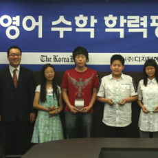

2007 Mar 15: Singapore, Away and Alone
At the age of 14, my parents "sent" me to study in Singapore alone. That was pretty harsh at that moment but, on hindsight, I think it helped me much in terms of being independent and disciplined. Currently, I am bilingual (English and Korean). So, I guess Singapore education worked out just fine for me. The photo was taken while I was preparing to come to Singapore and basically I won some award for math (one of the many to come)!
